Chapter 8: Data Visualization
Contents
Chapter 8: Data Visualization¶
In this chapter we will learn to use the Plotly graphing library given that it is the leading Python library for data visualization.
What you will learn
Principles of Effective Visualizations
How to incorporate a Plotly Figure Object in a Dash App
The power behind of Plotly Express
How to create common Plotly chart types
8.1 Principles of effective visualizations¶
Firas
8.2 Plotly Figures inside Dash apps¶
As an example of how to include Plotly figures in your Dash app, first we need to create the Plotly figure. Consider the following code snippet where we load the gapminder dataset from px.data.gapminder(), filter the data to consist of only four countries, and make a line chart with px.line(). The function call px.line() in this snippet will contain attributes that you will learn more about in the section 8.3.
8.2.1 Create a Plotly Express Figure¶
import plotly.express as px
import pandas as pd
df = px.data.gapminder()
df_filtered = df[df['country'].isin(['Canada', 'Brazil', 'Norway', 'Germany'])]
# figure
fig = px.line(df_filtered, x='year', y='lifeExp', color='country')
fig.show()
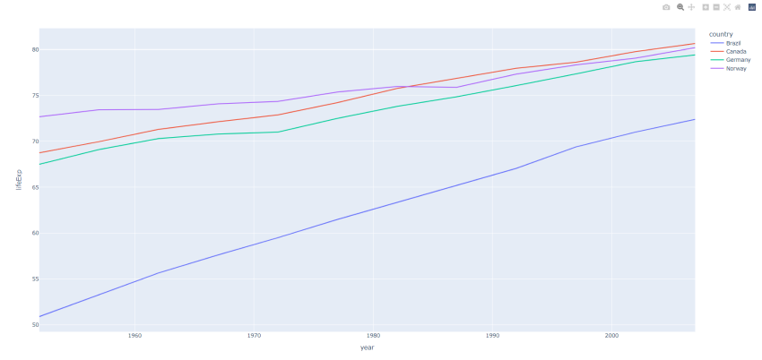
8.2.2 Incorporate the Figure into a Dash app¶
To display the line chart in our Dash app, we need to assign it to the figure property of the dcc.Graph component as shown below.
from dash import Dash, dcc
import pandas as pd
import plotly.express as px
import dash_bootstrap_components as dbc
# data
df = px.data.gapminder()
df_filtered = df[df['country'].isin(['Canada', 'Brazil', 'Norway', 'Germany'])]
# figure
fig = px.line(df_filtered, x='year', y='lifeExp', color='country')
# Dash App
app = Dash(__name__, external_stylesheets=[dbc.themes.BOOTSTRAP])
# App Layout
app.layout = dbc.Container([
dbc.Row([
dbc.Col([
dcc.Graph(id='figure1', figure=fig)
], width = 8)
])
])
if __name__== '__main__':
app.run_server()
8.2.3 Incorporate the Figure into an interactive Dash app¶
Although we created a beautiful app with a line chart, the app was static. One consequence is that the app user cannot interact with the data to change the elements of the graph. Let’s create an interactive app, where the callback allows the user to update the countries displayed in the figure through a dropdown.
from dash import Dash, dcc, Output, Input
import pandas as pd
import plotly.express as px
import dash_bootstrap_components as dbc
# Data
df = px.data.gapminder()
# Instantiate the App
app = Dash(__name__, external_stylesheets=[dbc.themes.BOOTSTRAP])
# App Layout
app.layout = dbc.Container([
dcc.Markdown("# Interactive Dash App with Line Chart"),
dbc.Row([
dbc.Col([
dcc.Dropdown(id='country-dropdown',
options=[x for x in df.country.unique()],
multi=True,
value=['Canada', 'Brazil'])
], width=8)
]),
dbc.Row([
dbc.Col([
dcc.Graph(id='figure1')
], width = 8)
])
])
# Configure Callback
@app.callback(
Output('figure1','figure'),
Input('country-dropdown', 'value')
)
def udpate_graph(countries_selected):
df_filtered = df[df.country.isin(countries_selected)]
fig = px.line(df_filtered, x='year', y='lifeExp', color='country')
return fig
if __name__=='__main__':
app.run_server(debug=True)
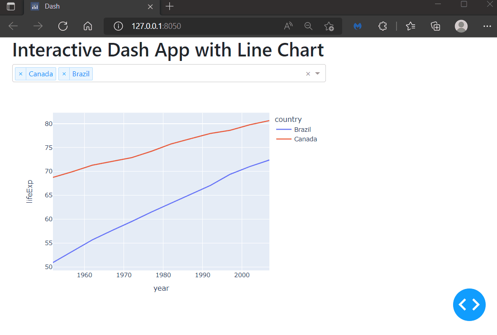
As you can see from the code above, the callback is triggered as soon as the user selects a country from the dropdown; then, we filter the dataframe based on the countries selected; then, we build the line chart and return it as the object assigned to the figure property of the dcc.Graph.
8.3 Introduction to the powers of Plotly Express¶
The Plotly Express module contains functions that can create entire figures at once and is usually referred to as px. Plotly Express is part of the Plotly library and it is the recommended starting point for creating some of the most common figures like the line, scatter, bar, and timeline figures. We’ll go through some of them in this chapter, but you can learn about many other figures in the documentation.
First, let’s unveil the powers you can unleash with a multi-dimensinal dataset like px.data.gapminder() and a simple Plotly Express function like px.line()
8.3.1 About the gapminder dataset¶
The gapminder dataset is a built-in Plotly Express dataset provided by Gapminder.org. Here you’ll find 1704 rows of data and the following columns ['country', 'continent', 'year', 'lifeExp', 'pop', 'gdpPercap' 'iso_alpha', 'iso_num']. Life expectancy at birth is stored as lifeExp, population by country is pop, and gdpPercap is the per capita GDP. The data is a so-called long (or tidy) form type. Long-form data has one row per observation, and one column per variable. This data form is suitable for storing and displaying multivariate data (more dimensions than two).
Plotly Express also handles wide-form and mixed-form data.
8.3.2 A basic line chart with px.line()¶
As a minimal example, consider life expectancies in Canada in a period from 1952 to 2007:
import plotly.express as px
import pandas as pd
# sample data
df = px.data.gapminder()
df = df[df["country"].isin(["Canada"])]
# Line chart
fig = px.line(df, x="year", y="lifeExp", title="PX Line plot", template="plotly_white")
fig.show()
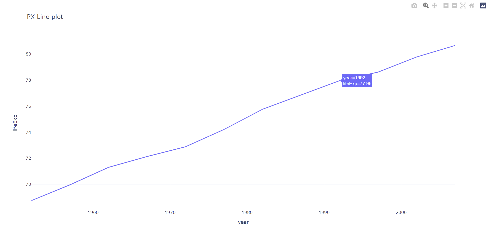
Let’s look at the applied attributes of px.line() one by one.
dfis a reference to the imported data set.x='year'instructs theyearcolumn indfto appear on the x-axisy='lifeExpinstructs thelifeExpcolumn indfto appear on the y-axistitle="PX Line plot"is optional, and creates a title in the top left corner.template='plotly_white'is also optional, and creates a minimal figure layout with a white background.
See the line chart page of the Plotly Express high-level interface to read more about the line chart attributes
8.3.3 Adding multiple lines with different colors¶
So far so good, but the data set includes data for many more countries that could be brought into the light. The way you add data from another country can seem a bit strange at first, but it’s also an important part of what makes Plotly Express so powerful and flexible.
import plotly.express as px
import pandas as pd
# sample data
df = px.data.gapminder()
df = df[df['country'].isin(['Canada', 'Norway', 'Germany'])]
# line chart
fig = px.line(df, x="year", y="lifeExp", color='country', title="PX Line plot", template="plotly_white")
fig.show()
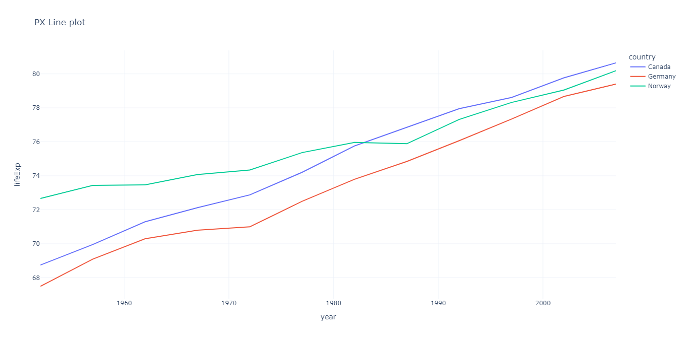
In addition to the already existing attributes, we’ve added color='country'. This is exactly what you need to make an addition of lines representing a larger set of countries. What happens under the hood is that Plotly Express assigns a color to each unique value in the country column in df, which are: ['Canada', 'Germany', 'Norway'].
Warning
Without the color attribute, an assignment of the y-axis to a multivariable column will create a mess of a chart where all lines are blue, and the end-point of one line is connected to the starting point of another.
{kind=link}
8.3.4 The interactivity of Plotly Figures¶
With color='country' initialized, a legend is also produced to let you know which line represents which country. The legend is interactive and lets you toggle the lines on and off.
Both axes also have interactive functionalities that depend on where you click on the axes. If you, for example, grab the middle of the y-axis, the complete axis will slide when you move the mouse. If you grab the top of the axis, everything else other than the minumum value will change.
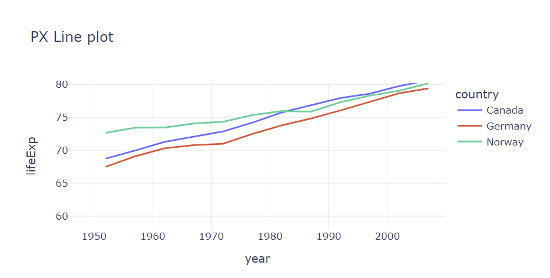
8.3.5 Multidimensional data with lines and markers¶
You can combine lines and markers in px.line() to illustrate multiple dimensions of your data set through the addition of the symbol attribute. This works much like color='country'. But this time, we’re applying a symbol sequence to the unique values in df['continent'] which are 'Americas' and 'Europe'.
import plotly.express as px
import pandas as pd
# sample dataset from plotly express
df = px.data.gapminder()
df = df[df['country'].isin(['Canada', 'Norway', 'Germany'])]
fig = px.line(df, x='year', y='lifeExp', color='country', symbol='continent',
title="Multidimensional data", template='plotly_white')
fig.show()
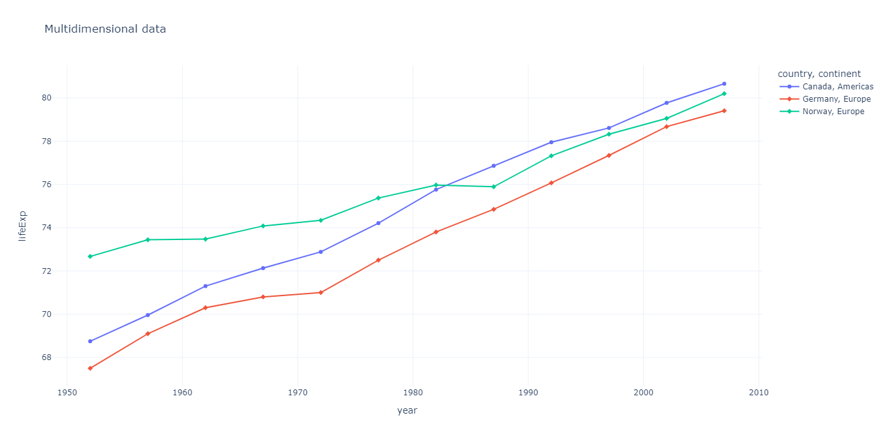
8.3.6 Scatter charts¶
The only thing you have to do to drop the lines in our first figures and show markers only, is to replace the px.line() call with px.scatter() and otherwise use the same arguments.
import plotly.express as px
import pandas as pd
# sample dataset from plotly express
df = px.data.gapminder()
df = df[df['country'].isin(['Canada', 'Norway', 'Germany'])]
fig = px.scatter(df, x='year', y='lifeExp', color='country',
title='PX scatter plot', template='plotly_white')
fig.show()
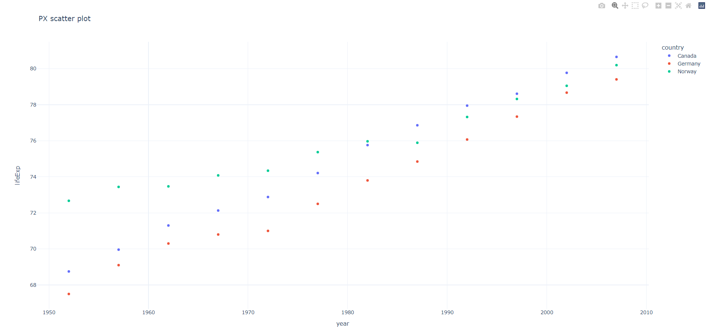
8.3.7 Animated scatter / bubble charts¶
Things get really interesting when you apply multiple settings like animation_frame="year", animation_group="country" and size="pop". The complete snippet below will create an interactive, animated chart that illustrates both life expectancies, GDP per capita and populatoin for a multitude of countries accross several continents through multiple years.
import plotly.express as px
df = px.data.gapminder()
fig = px.scatter(df, x="gdpPercap", y="lifeExp", animation_frame="year",
animation_group="country", size="pop", color="continent",
hover_name="country", log_x=True, size_max=55,
range_x=[100,100000], range_y=[25,90])
fig.show()
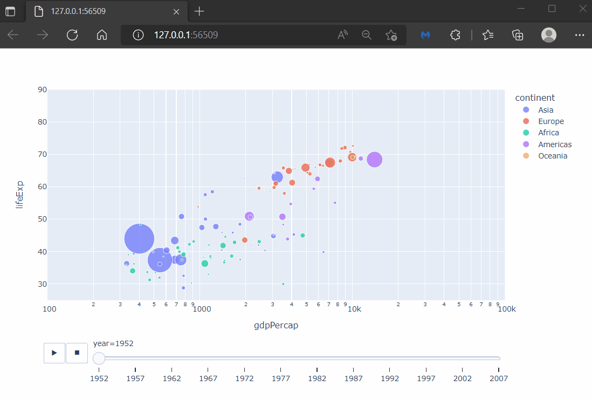
Note
Certain IDEs from time to time encounter probblems when running Plotly animations, even if the figure itself has been produced. If this happens to you, try including the following snippet in your code. Take a look at this post for more details:
import plotly.io as pio
pio.renderers.default = 'notebook_connected'
Tip
The animatoin snippet above introduced several new methods of the fig object. You can learn more about these methods in the docs
8.4 Exploring additional Plotly Express figures¶
Now that you’ve got a sense of the powers hidden in all Plotly figures, the time has come to introduce additional categories to line and scatter plots.
One thing all of the following chart types have in common is that they use the very same data set and that very little data wrangling is required. The few data wrangling techniques that are used are only there because some chart types require a specific data format, or simply look better with a smaller subset of the gapminder data set.
8.4.1 Stacked Bar chart¶
px.bar() works similarly to px.line() in that it uses color="country" in the same way. By default, each colored category is stacked on top of one another for each unique occurence of year on the x-axis.
import plotly.express as px
df = px.data.gapminder()
fig = px.bar(df, x='year', y='pop', color='country',
title='PX scatter plot',
template='plotly_white')
fig.show()
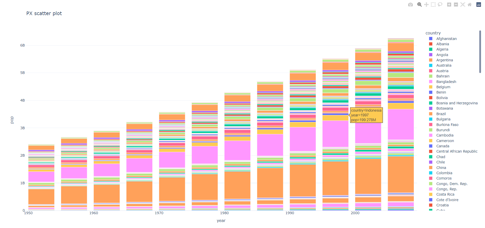
8.4.2 Grouped bar chart¶
Stacking the bars makes sense to illustrate accumulations for data such as population, but not so much for life expectancies. In order to group subcategories next to each other, simply include barmode='group' in the function call.
Note
Not all Plotly Express functions produce perfect layout for every data set. Below, we’ve used antoher method of the fig object called range to adjust the range of the y-axis; fig.update_yaxes(range=[60, 80]). Try the code snippet without that particular line, and see if you agree with our design choices.
import plotly.express as px
df = px.data.gapminder()
df = df[df['country'].isin(['Spain', 'United Kingdom'])]
fig = px.bar(df, x='year', y='lifeExp', color='country',
barmode='group', title='Grouped Bar Chart',
template='plotly_white')
fig.update_yaxes(range=[60, 80])
fig.show()
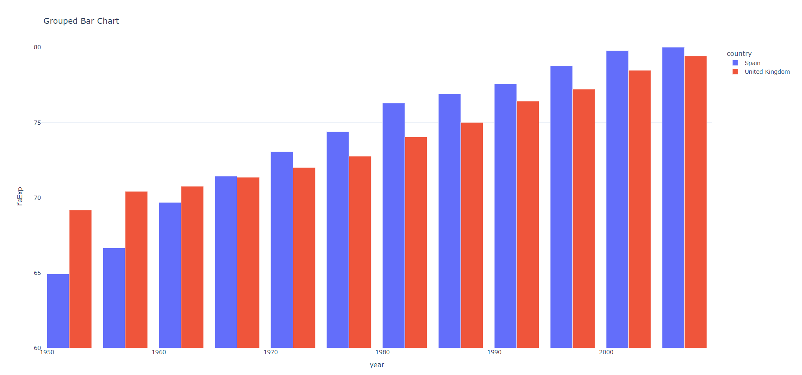
8.4.3 Histograms¶
Histograms can be considered a special kind of bar chart where the bars represent groups of data instead of individual observations. By default, px.histogram() will also stack categories on top of one another. To prevent that and display distributions of data individually, just inclue barmode='overlay' as seen in the snippet below.
import plotly.express as px
df = px.data.gapminder()
df = df[df['continent'].isin(['Asia', 'Europe'])]
fig = px.histogram(df, x='lifeExp', nbins=20, color='continent', barmode='overlay')
fig.show()
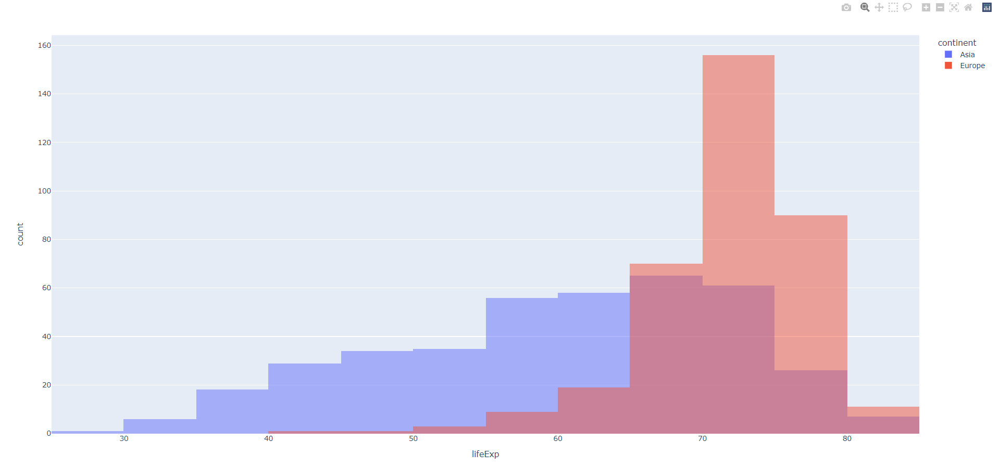
8.4.4 Box plot¶
px.box lets you investigate distributions of data even further. By default, px.box() displays mean, quartiles, and some outliers for the different categories in the order that they appear in the data set. In the following example we’ve included the argument category_orders to display mean values for each group in a decreasing manner.
import plotly.express as px
df = px.data.gapminder()
fig = px.box(df, x="continent", y="lifeExp",
category_orders = {'continent': ['Oceania', 'Europe', 'Americas', 'Asia', 'Asia', 'Africa']})
fig.update_traces(quartilemethod="exclusive") # or "inclusive", or "linear" by default
fig.show()
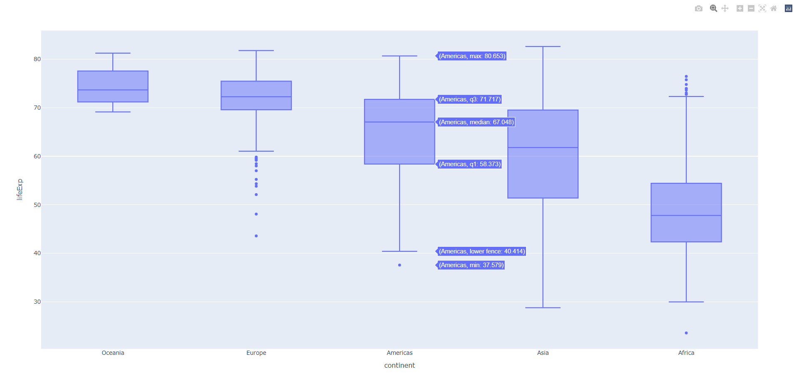
8.4.5 Facet / Trellis plots¶
This section uses a new attribute that splits a data set into several subplots: facet_col. Then, we use facet_col_wrap to define the number of columns in which we would like to organize the subplots.
import plotly.express as px
df = px.data.gapminder()
# data subset
df = df[df['continent'].isin(['Europe', 'Americas', 'Asia'])]
df = df[df['year']>1962]
fig = px.scatter(df, x='gdpPercap', y='lifeExp', color='continent', size='pop',
facet_col='year', facet_col_wrap=3)
fig.show()
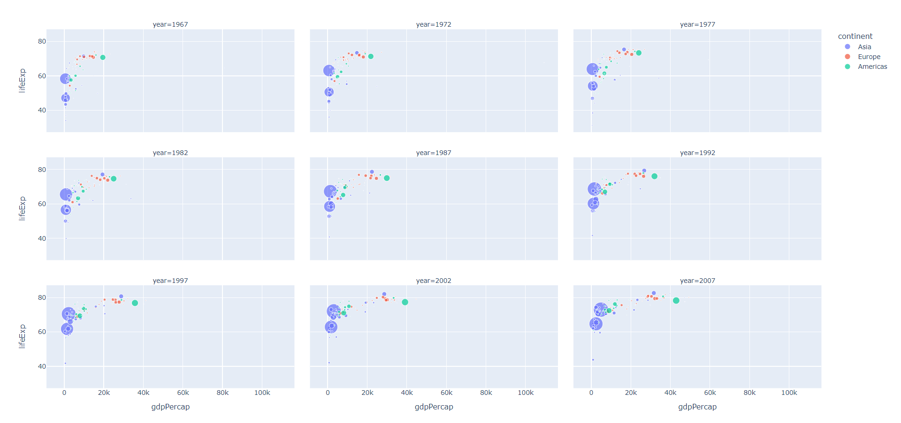
8.4.6 Treemaps¶
Treemap charts visualize hierarchical data using nested rectangles. The hierarchy is defined by labels (names for px.treemap) and parents attributes. Another way to define the hierarchy is through the attribute path: list of columns names or columns of a rectangular dataframe defining the hierarchy of sectors, from root to leaves.
import plotly.express as px
import numpy as np
df = px.data.gapminder().query("year == 2007")
fig = px.treemap(df, path=[px.Constant('world'), 'continent', 'country'], values='pop',
color='lifeExp', hover_data=['iso_alpha'])
fig.show()
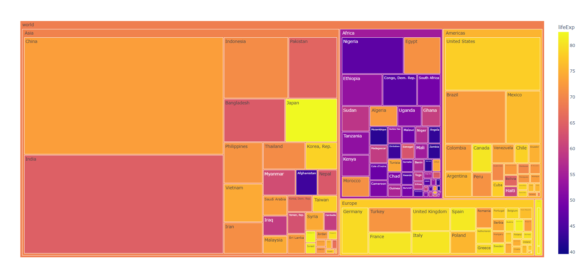
8.4.7 Heatmaps¶
The term “heatmap” usually refers to a cartesian plot with data visualized as colored rectangular tiles.
import plotly.express as px
df = px.data.gapminder()
df = df[df['gdpPercap']<60000]
fig = px.density_heatmap(df, x="gdpPercap", y="lifeExp",
nbinsx=20, nbinsy=20, color_continuous_scale="Viridis")
fig.show()
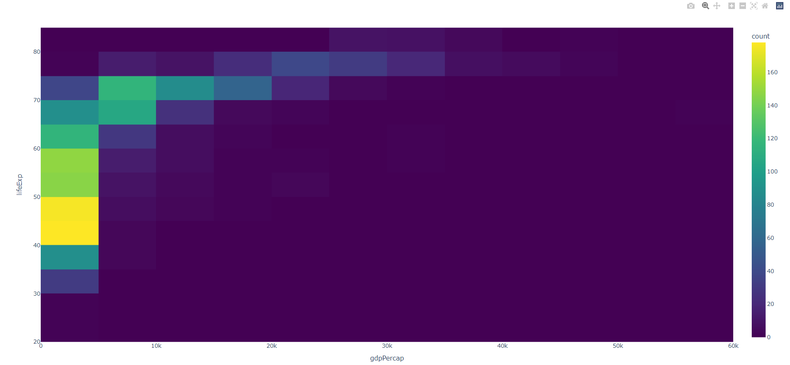
8.4.8 Timeline charts¶
Timeline or GANTT charts often describe start and end points of events or tasks. In the following example, we’ve made a few changes to the gapminder data set and removed some random dates. You can use this code snippet to illustrate the available time period data for each country. Missing years within a time period are not taken into account.
import plotly.express as px
import pandas as pd
import numpy as np
# data
df = px.data.gapminder()
df = df[df['country'].isin([
'France', 'Germany',
'Sweden', 'Finland',
'United Kingdom'])]
df = df.reset_index()
# instructions to drop random observations
np.random.seed(12)
remove_n = int(len(df)*0.6)
drop_indices = np.random.choice(df.index, remove_n, replace=False)
df = df.drop(drop_indices)
# pivot to country in column names, integer as index, and years as values
dfp = df.pivot(index='index', columns='country', values='year')
dfp = dfp.agg(['min','max'])
dfp = dfp.astype(int)
df = dfp.T
df = df.reset_index()
df = df.astype(str)
fig = px.timeline(df, x_start="min", x_end="max", y="country")
fig.update_yaxes(autorange="reversed") # otherwise tasks are listed from the bottom up
fig.show()
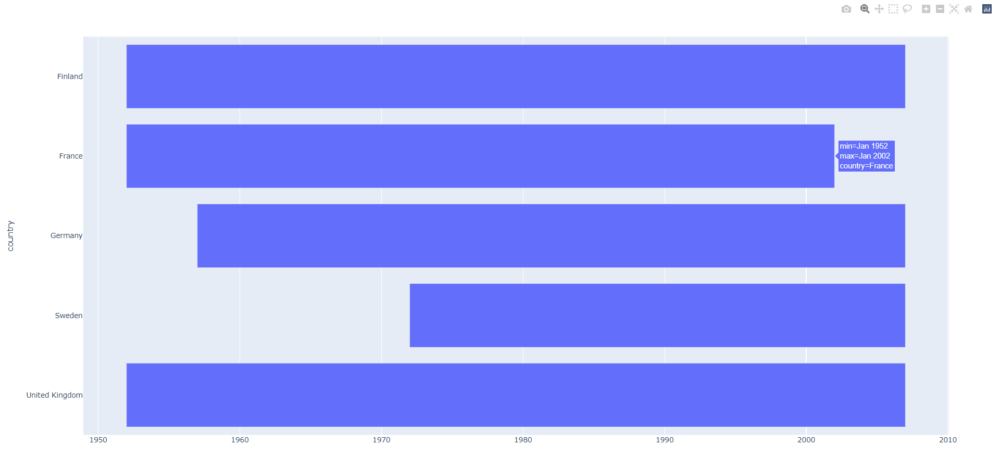
Tip
You can set Plotly to be the plotting backend for pandas, and produce Plotly Figures with df.plot(kind) where kind can be any of ['scatter', 'line', 'area', 'bar', 'barh', 'hist', 'box', 'violin', 'strip', 'funnel', 'density_heatmap', 'density_contour', 'imshow']. This is a nice way to quickly explore more Plotly Express graphing options. Run the following snippet to see 11 different options.
import random
import pandas as pd
random.seed(123)
df = pd.DataFrame({'x':[1,2,3,4,5,6]})
pd.options.plotting.backend = "plotly"
kinds = ['scatter', 'line', 'area', 'bar', 'barh', 'hist', 'box', 'violin', 'strip', 'funnel', 'density_heatmap', 'density_contour', 'imshow']
for k in kinds[:-1]:
fig = df.plot(kind=k, title = k)
fig.update_layout(title = dict(font=dict(color='#EF553B')))
fig.show()
Summary¶
In this chapter you’ve learned the effective principles of data visualization and how to use Plotly graphs within Dash. You’ve also learned to plot common Plotly figures using the gapminder data set. This notebook offers additional data analysis of the Gapminder data set with Plotly.
In the next chapter we will do a deep dive into the Dash DataTable.